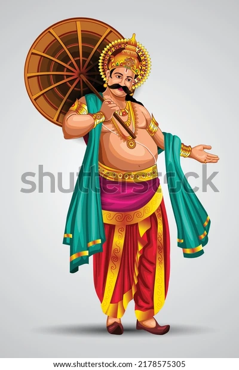
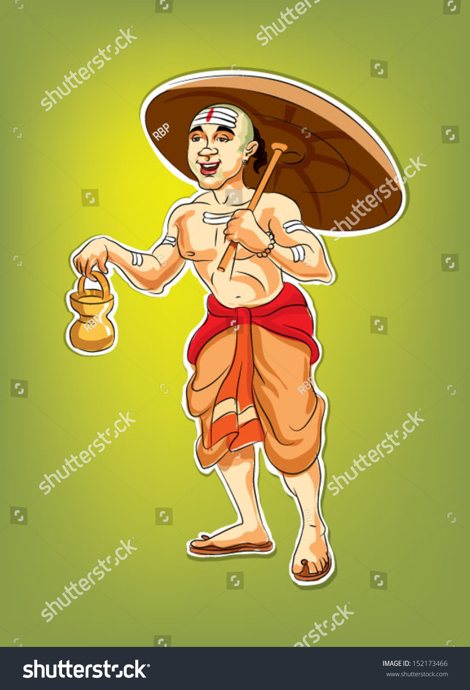
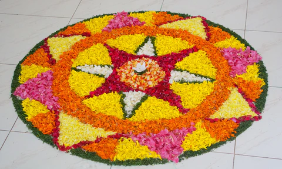
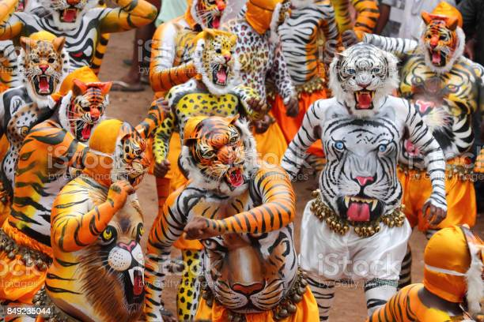
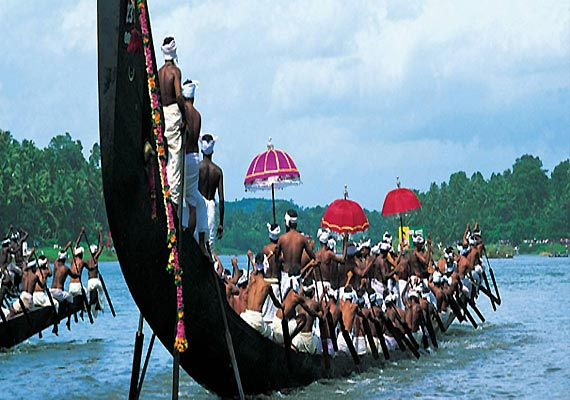
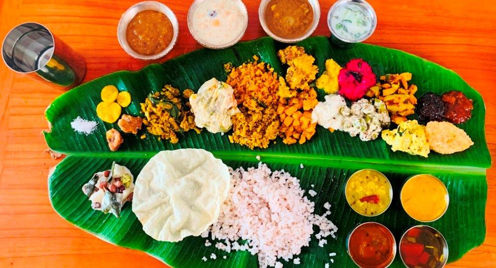

History
Onam (
Pronunciation) is an annual
Indian Harvest festival. A major annual event for Keralites, it is the official festival of the state
and includes a spectrum of cultural events.
Onam commemorates Vamana and Mahabali.
According to Hindu legends, Onam is celebrated in Kerala in remembrance of the good governance under the
rule of daitya king Mahabali, a mythical king who once ruled Kerala.
The legend holds that jealous of Mahabali's popularity and his power, the devas and gods conspired to end
his reign.

Fig.1 - Mahabali.

Fig.2 - Vamanan.
Celebrations
The celebrations mark the Malayalam New Year, are spread over ten days, and
conclude with Thiruvonam.
The ten days are sequentially known as Atham, Chithira, Chodhi, Vishakam, Anizham, Thriketa, Moolam,
Pooradam,
Uthradam and Thiruvonam. Below are the few ways to celebrate Onam.
- Pookkalam: Flower Rangoli
The floral Rangoli, known as Onapookkalam, Athapookkalam or just Pookkalam,
is made out of the gathered blossoms with several varieties of flowers of differing tints pinched up
into little pieces to design and decorate patterns on the floor, particularly at entrances and temple
premises like a flower mat.

Fig.3 - Pookalam
- Pulikali: Tiger Dance
Pulikali, also known as Kaduvakali is a common sight during the Onam season.
This dance showcases performers painted like tigers in bright yellow,
red and black, who dance to the beats of instruments like Chenda and Thakil.

Fig.4 - Pulikali
- Vallamkali: Boat Race
The Vallamkali (the snake boat race) is another event that is synonymous with Onam.
Well-known races include the Aranmula Uthrattadhi Boat Race and the Nehru Trophy Boat Race. Numerous
oarsmen
row huge snake-shaped boats.

Fig.5- Vallamkali
- Sadhya: Feast
The Onam sadya (feast) is another indispensable part of Onam,and almost every Keralite either makes or
attends one.
The Onasadya reflects the spirit of the season and is traditionally made with seasonal vegetables such as
yam, cucumber, ash gourd and so on.
The feast is served on plantain leaves and consists of nine courses.

Fig.6- Sadhya